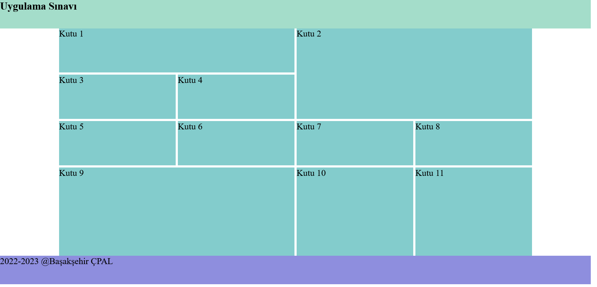
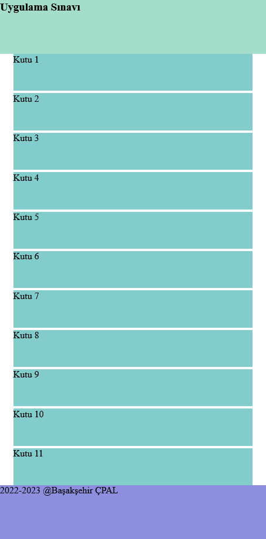
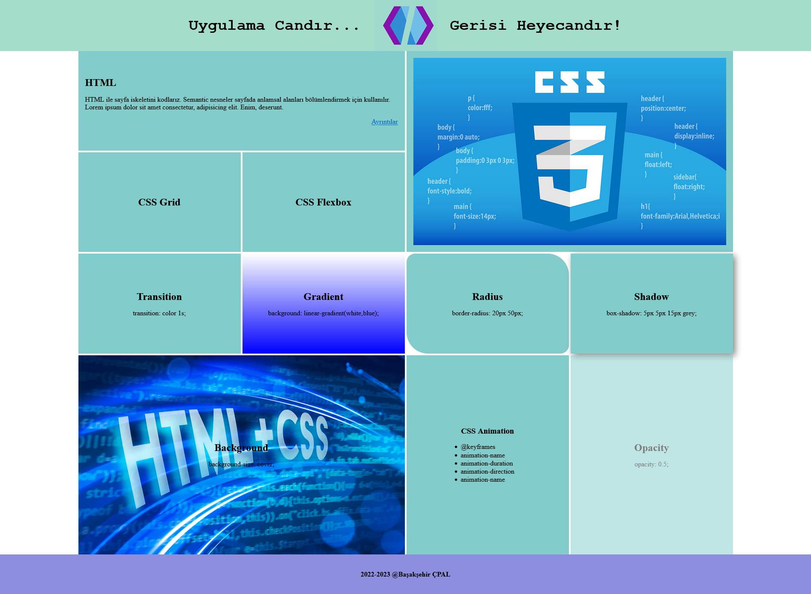

BAŞAKŞEHİR ÇOK PROGRAMLI ANADOLU LİSESİ
WTUG DERSİ 1.DÖNEM UYGULAMA SINAVI
Uygulama Yönergesi:
- Aşağıda ekran görüntüsü verilen Layout’u CSS Grid yöntemiyle oluşturunuz.(25 puan)
- Ana iskelet Grid sözel yöntemle yapılacaktır.
- Orta alandaki kutular Grid sayısal yöntemle yerleştirilecektir.
- Ana iskelet için Semantic etiketleri kullanılacaktır. Kutular için istediğiniz nesne yapısını kullanabilirsiniz.
- Layout için mobil uyumlu yapı oluşturulacaktır.
- Aşağıdaki ekran görüntüsünde belirtilen şekilde içerik ekleme ve dizilişlerini CSS Flexbox yöntemiyle yapınız. (25 puan)
- Header alanında kullanılacak resim “logo.png” uygulama klasöründe mevcuttur.
- Kutulardaki resimlerin ilki “css.jpeg” içerik resmi olarak kutuya eklenecek ve kutuya sığması sağlanacaktır.
- Diğer resim “background.png” aşağıdaki kutuya arkaplan resmi olarak eklenecek ve arkaplanı kaplaması sağlanacaktır.
- Tüm kutulardaki içeriklerin yatay ve dikey hizalamaları ekran görüntüsündeki şekilde olacaktır.
- Kutularda uygulanması istenen ileri CSS uygulamaları(opacity,transition vs)için gerekli komutlar ekran görüntüsünde belirtilmiştir. İlgili kutuya uygulanacaktır.

